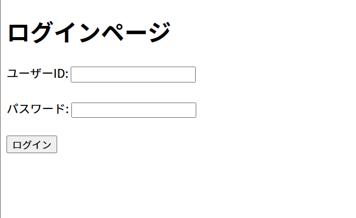
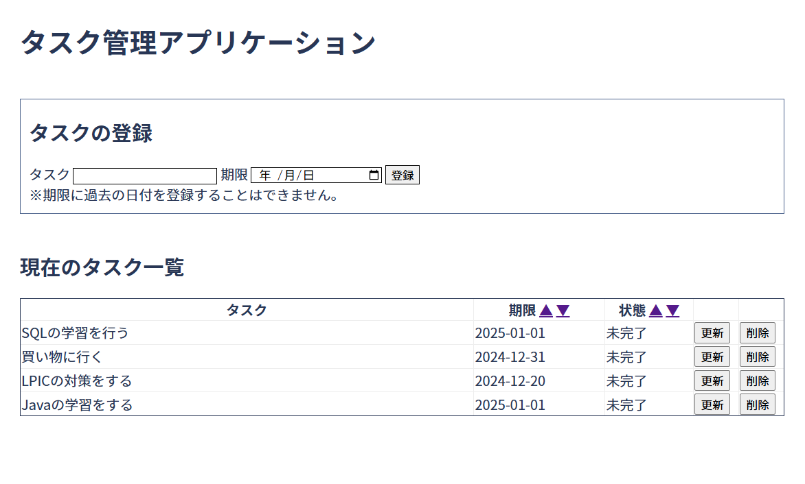

Ryo Ao`s portfolio
Works
タスク管理アプリケーション
2024.12~ webアプリケーション


前へ
次へ
アプリ名
タスク管理アプリケーション
開発開始
2024.12
担当範囲
すべて
説明
技術評論社『プロになるJava』の書籍内の課題「タスク管理ツール」に、ログイン、ソート、過去の日付の登録不可などの設定を自身で追加していったアプリです。
機能
ログイン / 課題の追加 / 課題の更新 / 課題の削除 /課題のソート
技術・使用ソフト
Java / SpringBoot / html / css / bootstrap / git
URL
ID：sample
パスワード：samplepass
※ゲストとしてログインできます
※現在のURLは仮のものであり、web上には公開されておりません。localhost:8800よりアクセス可能です。
GitHub
https://github.com/rocklain/spring-boot-tasklist
About me
Ryo Ao
JavaとSpringBootを使用したwebアプリの開発に取り組んでいます。モノづくりが大好きです。
現在学習中の技術
Java / SpringBoot / html / css / git / SQL / JavaScript
特技・趣味
筋トレ / エレキベース / 読書